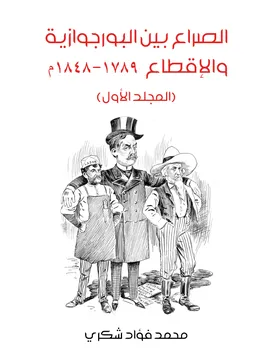

الصراع بين البورجوازية والإقطاع ١٧٨٩–١٨٤٨م (المجلد الأول)

قراءة عربية أصلية محددة النطاق في الصفحات 21 إلى 26 من ملف PDF المرتبط، وليست تلخيصا كاملا للكتاب. نناقش ما تدعمه هذه المقاطع فقط.
كيف ولدت فكرة الأمة من رحم الثورة الفرنسية
يتتبع المقطع كيف أوجد رجال الثورة الفرنسية معنى للأمة يميزون به الدولة الفرنسية في عهدها الجديد بأنظمتها التي تتعارض مع نظامها الملكي القديم: فالأمة في اعتبارهم كانت الدولة، وعرفوا «الوطنيين» بأنهم الذين تمسكوا بالآراء الجديدة في كل ما يتصل بنظام الدولة وشئونها وأيدوها تأييدًا تامًا. ثم اتسعت فكرة الأمة لتشمل عناصر مشتركة بين مدلول السكان أو الشعب ومدلول الدولة، فصارت تعرف بأنها مجموعة الأفراد الذين ولدوا في بلد واحد وتجنسوا بجنسية واحدة وعاشوا في ظل حكومة واحدة، ثم صارت تعني المواطنين باعتبارهم جثمانًا اجتماعيًا منفصلًا عن الحكومة التي تحكمهم، فأوجد هذا التعريف فروقًا ظاهرة بين فكرة الشعب وفكرة الأمة إذ أدخل في معناها عناصر أخلاقية وسياسية كان تعريف الشعب يخلو منها.
زاوية وحدود القراءة
قراءة موجزة من ص ٢١ إلى ص ٢٦ من أصل ٤٣٦ صفحة، تعرض فصل «المبدأ القومي»، لا الكتاب كاملًا.
الطبعة والقراءة
هذه النسخة من الكتاب صادرة ومتاحة مجانًا من مؤسسة هنداوي بشكل قانوني؛ حيث إن نص الكتاب يقع في نطاق الملكية العامة تبعًا لقوانين الملكية الفكرية.
تنزيل PDF المجاني ↓ القراءة والمصدر الرسمي ↗